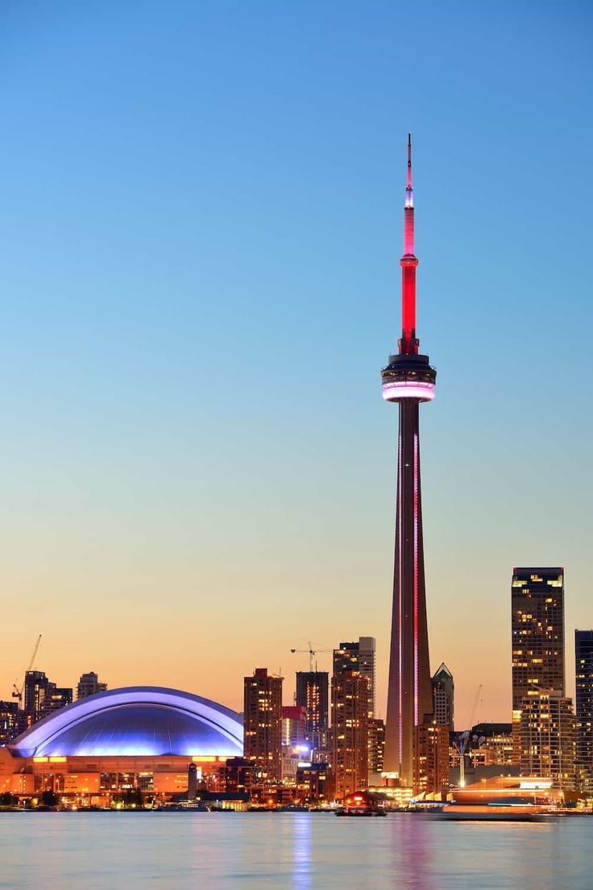

At Midnight Horizon, we don’t just book trips — we craft journeys that awaken the explorer in you. Whether you dream of sipping champagne under the Northern Lights, unwinding on a private island in the Maldives, hiking ancient trails through Machu Picchu, or getting lost in the electric buzz of Tokyo — we make it happen.
From iconic cities to hidden gems, our curated destinations span every continent, tailored for the discerning traveler who seeks more than just a vacation. We specialize in luxurious escapes, cultural immersions, off-the-grid adventures, and once-in-a-lifetime experiences — all personalized to your style.
Let us take you beyond the ordinary. The world is wide. Your horizon starts at midnight.
Europe
Discover Europe’s most iconic cities with travel experiences designed for comfort and ease. Walk through the historic streets of London, enjoy the charm of Paris, relax along the coast in Barcelona, and explore the unique blend of cultures in Istanbul. Whether you're interested in sightseeing, food, or simply enjoying a new place, we help you plan simple, enjoyable trips across Europe’s top destinations. With carefully selected accommodations, guided tours, and local tips, our goal is to make your journey smooth, memorable, and tailored to what matters most to you.
MilanLondonParisIstanbul
North America
Explore the vibrant diversity of North America through three unforgettable cities. Soak up the sun and nightlife in Miami, where tropical beaches meet modern culture. Discover the heart of tradition and flavor in Mexico City, a destination rich with history, art, and world-class cuisine. Head north to Toronto, Canada’s cultural hub, where stunning skylines, diverse communities, and lakeside charm await. Whether you’re after relaxation, exploration, or a taste of something new, our North American getaways offer a perfect blend of experiences for every traveler.
MiamiMexico City

Toronto
Europe
Discover Europe’s most iconic cities with travel experiences designed for comfort and ease. Walk through the historic streets of London, enjoy the charm of Paris, relax along the coast in Barcelona, and explore the unique blend of cultures in Istanbul. Whether you're interested in sightseeing, food, or simply enjoying a new place, we help you plan simple, enjoyable trips across Europe’s top destinations. With carefully selected accommodations, guided tours, and local tips, our goal is to make your journey smooth, memorable, and tailored to what matters most to you.
MilanLondonParisIstanbulBarcelona
Europe
Discover Europe’s most iconic cities with travel experiences designed for comfort and ease. Walk through the historic streets of London, enjoy the charm of Paris, relax along the coast in Barcelona, and explore the unique blend of cultures in Istanbul. Whether you're interested in sightseeing, food, or simply enjoying a new place, we help you plan simple, enjoyable trips across Europe’s top destinations. With carefully selected accommodations, guided tours, and local tips, our goal is to make your journey smooth, memorable, and tailored to what matters most to you.